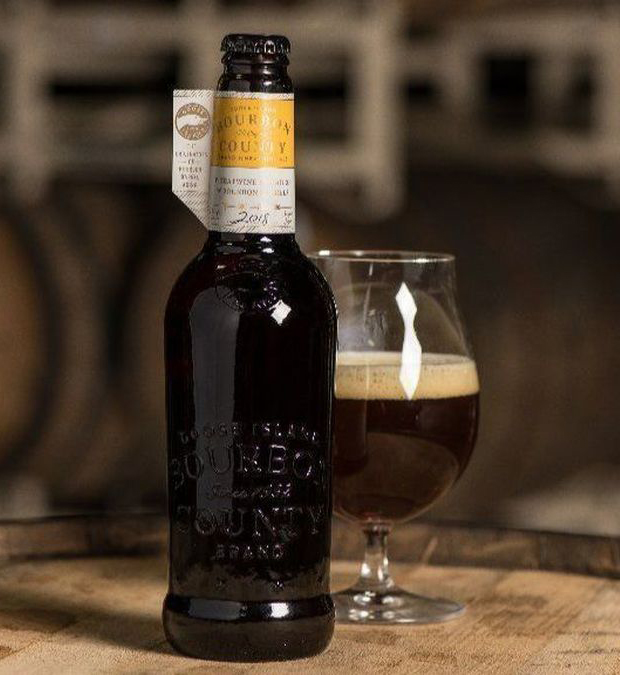

HOME
ALES
Backwoods Bastard Scotch Ale
Founders Brewing Co.
The 2018 Festival of Wood and Barrel-Aged Beers (FoBAB) award-winning variant is back for its second year, this year (2019) aged 100% in Larceny wheated bourbon casks from our partners at Heaven Hill. The result is a softer flavor profile, full of caramel, vanilla, butterscotch, and toffee flavors, all while carrying the nuances of Larceny bourbon barrels.
Goose Island Beer Company is a brewery in Chicago, Illinois, that began as a single brewpub opened in 1988 in Lincoln Park, Chicago, and named after a nearby island. The larger production brewery opened in 1995, and a second brewpub, in Wrigleyville, in 1999.
Check out their site HERE 